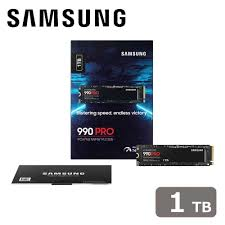
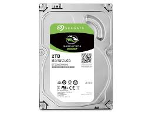

ゲーミングPCの「メモリ」と「ストレージ」を徹底解説！違いや選び方が丸わかり
ゲーミングPCを選ぶ際、「CPU」や「グラボ（GPU）」と同じくらい重要なのが「メモリ」と「ストレージ」です。
この記事では、パソコン初心者の方に向けて、それぞれの役割や種類、すると「なぜゲームはSSDに入れないといけないのか？」といった疑問を徹底的に解説します！
1. メモリ（RAM）とは？その役割を解説
メモリ（RAM：Random Access Memory）は、PCが処理を行うための一時的なデータ保管庫です。
よく「作業机の広さ」に例えられます。
- CPU（頭脳）が作業をする際、引き出し（ストレージ）からデータを作業机（メモリ）に広げて処理を行います。
- 机が広ければ広いほど（メモリ容量が大きいほど）、同時にたくさんのアプリを開いたり、重いゲームを快適に動かすことができます。
- 逆に机が狭いと、いちいちデータを引き出しに片付けながら作業しないといけないため、PCの動作が重くなってしまいます。
現代のゲーミングPCでは、最低でも16GB、動画配信や重いゲームをするなら32GBが推奨されています。
DDR4とDDR5の違い
メモリの規格には世代があり、現在主流なのが「DDR4」と最新の「DDR5」です。
| 規格 | 特徴 |
|---|---|
| DDR4 | 一つ前の世代ですが、非常に成熟しており価格が安いです。コスパを重視するゲーマーにまだまだ人気です。 |
| DDR5 | 最新世代のメモリです。DDR4と比べてデータの転送速度が約2倍速く、より高いフレームレート（fps）を出しやすくなります。少し価格は高いですが、将来性を考えるならこちらがおすすめです。 |
※注意：マザーボード（PCの基盤）によってDDR4専用かDDR5専用かが決まっているため、互換性に気をつけましょう。
2. ストレージ（SSD / HDD）とは？その役割を解説
ストレージは、OS（Windows）やゲームのデータ、写真、動画などを長期間保存しておくためのパーツです。
メモリが「作業机」なら、ストレージは「引き出し」や「本棚」にあたります。電源を切ってもデータは消えません。
SSDとHDDの違い
ストレージには大きく分けて「SSD」と「HDD」の2種類があります。
- HDD（ハードディスクドライブ）： 内部で磁気ディスクを回転させてデータを読み書きします。速度は遅いですが、大容量でも価格が安いのが特徴です。
- SSD（ソリッドステートドライブ）： USBメモリのようにフラッシュメモリでデータを読み書きします。HDDに比べて圧倒的に読み書き速度が速く、衝撃にも強いですが、大容量になると価格が高くなります。

【重要】OSやゲームは絶対に「SSD」に入れよう！
ゲーミングPCを買う、または組む場合、Windows（OS）とプレイするゲームは絶対にSSDにインストールしてください。理由は以下の通りです。
- PCの起動が爆速になる： HDDだと数分かかるPCの起動が、SSDなら数秒〜十数秒で完了します。
- ゲームのロード時間が激減する： マップの切り替えやマッチング後のロード画面がすぐに終わります。
- カクつき（スタッター）を防ぐ： 最近のオープンワールドゲームなどは、プレイ中にリアルタイムでデータを読み込みます。HDDだと読み込みが追いつかず、ゲームがカクついたりテクスチャの表示が遅れたりする原因になります。
※女の子の解説にあるように、速度を求めない大容量データ（写真や動画など）の保管庫としてHDDを併用するのは賢い使い方です！
SATA SSDとM.2 SSD（NVMe）の違い
一口にSSDと言っても、接続方法によって主に2つの種類があります。現在のゲーミングPCでは「M.2 SSD」が主流です。
| 種類 | 特徴と違い |
|---|---|
| SATA SSD （2.5インチ） |
ケーブルを使ってマザーボードと接続するタイプ。HDDよりは圧倒的に速いですが、SATAという古い通信規格の限界により、データ転送速度は最大500MB/s程度にとどまります。 |
| M.2 SSD （NVMe接続） |
ガムのような細長い基盤の形をしており、マザーボードに直接挿し込みます。NVMeという高速な通信規格を使っており、SATA SSDの数倍〜10倍以上（3,000MB/s〜7,000MB/s等）の超高速でデータをやり取りできます。配線も不要でPC内がスッキリします。 |
3. この記事で紹介したおすすめパーツ
メモリ（デスクトップPC用）

CORSAIR VENGEANCE DDR5-5200MHz 32GB (16GB×2枚)
最新のDDR5マザーボードに対応した高品質メモリです。ヒートシンク付きで冷却性能も高く、安定したゲームプレイを支える定番モデルとして非常におすすめです。
楽天市場で購入
シリコンパワー デスクトップPC用 メモリ DDR4 3200 32GB (16GBx2枚)
コスパ最強のDDR4メモリ。32GBの大容量でありながら価格が抑えられており、DDR4対応マザーボードで予算を抑えつつ快適な環境を作りたい方に最適です。
楽天市場で購入メモリ（ノートPC用）

Crucial PC5-44800 DDR5-5600 32GB ノートPC用
ゲーミングノートPCなどの増設に最適な最新規格DDR5メモリ。安心と信頼のCrucial製で、ノートPCでのゲームや重い作業の動作をワンランク引き上げます。
楽天市場で購入
Crucial DDR4-3200 SODIMM 32GB ノートPC用
DDR4対応ノートPCのアップグレードに最適です。メモリを32GBに増設することで、複数のアプリの同時起動や動画編集などもサクサク快適に行えるようになります。
楽天市場で購入ストレージ（SSD / HDD）

SPD SSD 1TB 2.5インチ SATAIII
古いPCのHDDからの換装や、サブストレージとして非常に優秀なSATA接続のSSDです。価格が安く、手軽にゲームやアプリを入れる容量を1TB増やすことができます。
楽天市場で購入
Samsung SSD 990 PRO 1TB (M.2/NVMe)
圧倒的な読み書き速度を誇る、ハイエンドゲーマー御用達のM.2 SSD。ゲームのロード時間を極限まで短縮し、PC全体のレスポレスを最高クラスに引き上げます。
楽天市場で購入
Seagate BarraCuda 内蔵HDD 3.5インチ 2TB
動画や写真、バックアップデータなどの大量保存に最適な大容量HDD。速度の速いSSDと組み合わせて「大容量データ倉庫」として使うのがベストな運用方法です。
楽天市場で購入4. 記事のまとめ
最後に、ゲーミングPCのメモリとストレージ選びのポイントをおさらいしましょう！
- メモリ（RAM）は「作業机」： 快適にゲームをするなら容量は「16GB以上」、できれば「32GB」がおすすめ。
- メモリの規格： コスパ重視なら「DDR4」、最新の性能と将来性を求めるなら「DDR5」。
- ストレージは「引き出し」： OSやゲームは、読み書きが圧倒的に速い「SSD」に絶対に入れること！
- SSDの種類： 今から選ぶなら、マザーボード直挿しで超高速な「M.2 SSD（NVMe）」一択です。容量は1TB以上推奨。
- HDDの使い道： ゲーム用ではなく、思い出の写真や動画などを大量に保存する「倉庫」として使い分けましょう。
これらのポイントを押さえて、自分にぴったりのゲーミングPCを選んでくださいね！